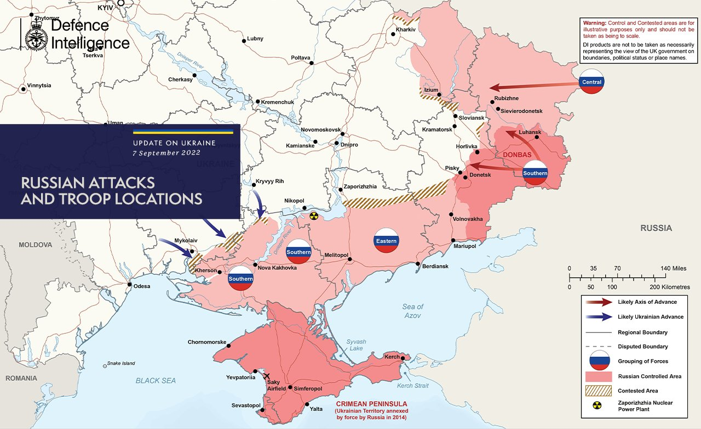

Українська армія до кінця цього року може відкинути російських окупантів
на позиції 23 лютого. При цьому повернення Криму можливе вже у
2023-му.
Про це повідомляє колишній командувач силами США в Європі Бен Ходжес в
інтерв’ю 24 каналу.
"Я впевнений, що у росіян немає волі до боротьби. Вони не йдуть в армію.
Кремль шукає резерви в Північній Кореї, Африці, Сирії. Навіть по
в'язницях, щоб когось змусити воювати у складі жалюгідної російської
армії. Бо люди не хочуть ставати її частиною. Все це підказує, що
росіяни вразливі і виснажені", - заявив Ходжес.
За його словами, росіяни "посипляться", якщо буде дотримано
декілька важливих факторів:
- збереження єдності;
-
підтримка України всім необхідним:
- Особливо зброєю!
- якщо всі й далі говоритимуть про необхідність перемоги України і допомоги їй це досягнути.
"Я відчуваю, що у наступні кілька тижнів нас чекають важкі бої, і потенційно, що російські війська посипляться. Я не бачу, як вони можуть поліпшити своє становище найближчим часом. Однак ми повинні надати Україні все необхідне", - зазначив Ходжес.
Карта від британської розвідки
Путін пригрозив перекрити газ: за яких умов
Голова кремля володимир путін сказав, що росія може припинити постачання газу та інших енергоресурсів до Євросоюзу, якщо:
- Є контрактні зобов'язання, контракти на поставку, а якщо будуть прийматися якісь рішення політичного характеру, що суперечать контрактам, то ми їх просто виконувати не будемо.
-
І взагалі не будемо нічого поставляти, якщо це суперечить нашим
інтересам і, в даному випадку, економічним. Ні газ не будемо
поставляти, ні нафту, ні вугілля, ні топковий мазут не будемо
поставляти.
- Тому що я хочу вас шантажувати.
- І взвгалі буду робити те, що я хочу.
Спікер МЗС Олег Ніколенко заявив про те, що скорочення постачання російського газу до Європи є етапом гібридної війни, який запланував путін.